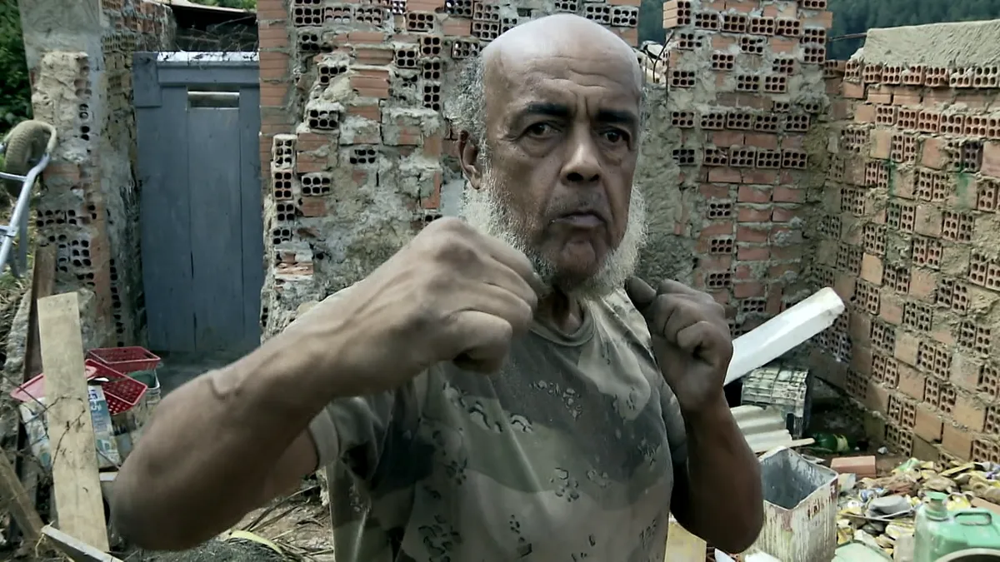

Origem do Muay Thai
O Muay Thai, também conhecido como Boxe Tailandês, é uma arte marcial que se originou na Tailândia e tem raízes na arte ancestral muay boran. A história do Muay Thai está ligada à necessidade de defesa dos tailandeses, que migraram da China para a Tailândia em busca de terras férteis para a agricultura.
Quem foi o criador do Muay Thai?
A palavra Muay Thai significa “Arte Livre” e o grande lutador da história que deu origem a essa arte marcial foi Nai Khanom Tom, considerado o “criador do muay thai”, uma figura chave da história tailandesa. Com isso, o dia 17 de março é considerado o Dia do Muay Thai no mundo.

Nai Khanom Tom foi um guerreiro do Reino de Aiutaia, capturado pelos birmaneses depois destes saquearem da cidade de Aiutaia em 1767. Em 1773, o rei birmanês Mangra, visitou Rangoon na celebração de Ket Tat Pagoda.
Muay Thai no Brasil
O Muay Thai chegou ao Brasil em 1979, quando o Grão Mestre Nélio Naja introduziu a arte marcial no país. Na época, o esporte era conhecido como Boxe Tailandês. A primeira associação de Muay Thai foi fundada em 1980, com o Grão Mestre Flavio Molina como presidente. O primeiro campeonato interestadual de Muay Thai foi disputado em 1981, entre o Rio de Janeiro e Curitiba, com vitória do Rio de Janeiro.

O Muay Thai é uma arte marcial tailandesa com mais de 2.000 anos de idade. A origem do esporte está ligada à origem do povo tailandês. No Brasil, o Muay Thai é praticado por cerca de 5 milhões de pessoas. A arte marcial é reconhecida pela sua funcionalidade de combate e defesa pessoal, além de promover autocontrole físico e mental. .
Grão Mestre Nélio Naja
Nascido no Rio de Janeiro, Nélio Borges de Souza, conheceu estilos de lutas durante o tempo em que foi paraquedista da Aeronáutica. Anos depois chegou a Curitiba, passou a ensinar o taekwondo e depois as técnicas do muay thai.
Em seus últimos anos de vida, viveu recluso e no anonimato, passando por dificuldades financeiras. No dia 12 de julho de 2018, foi encontrado sem vida no quarto de uma pensão na cidade de Almirante Tamandaré, na Região Metropolitana de Curitiba.